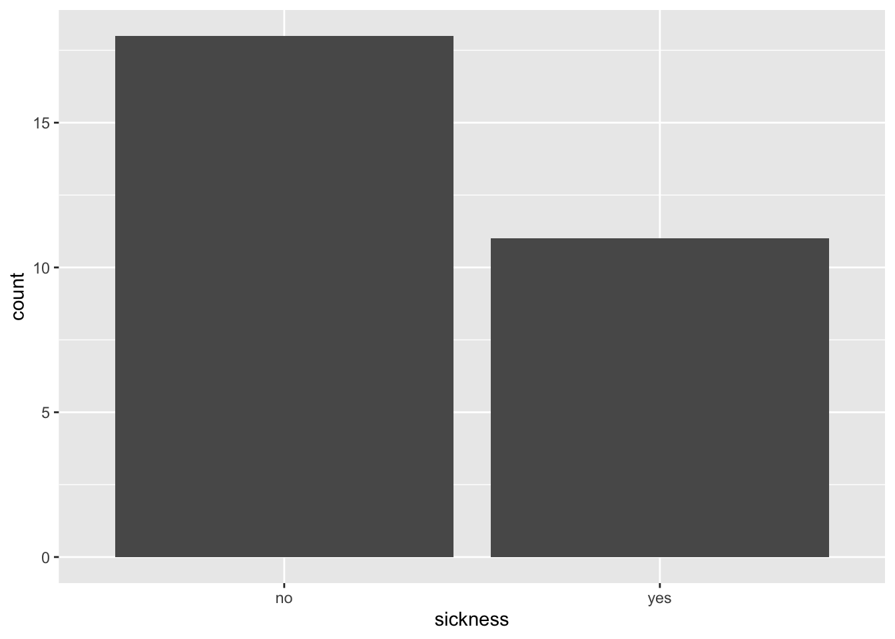
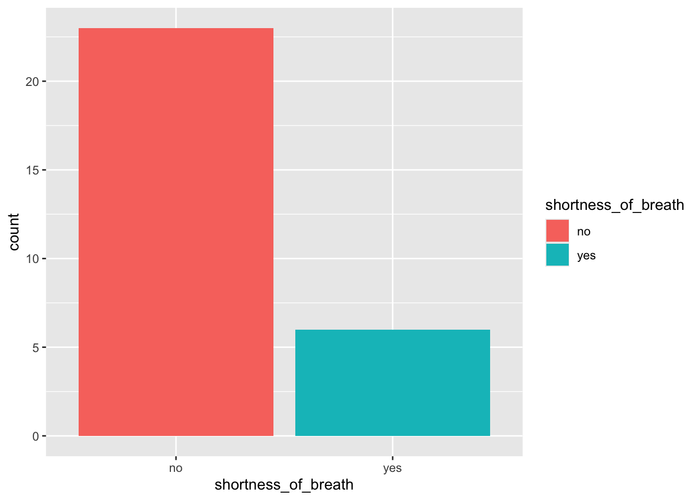
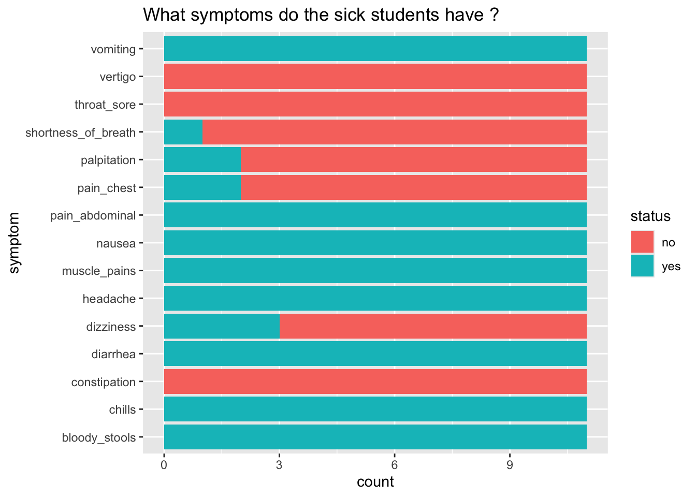

Chapter 6 Challenge One
6.1 Let’s focus on the student’s symptoms
We are going to use a new type of graph to do this, it’s called a bar plot.
For this we use geom_bar()

6.2 How many students were and were not sick ?
As well as the bar plot, we can also use the count() command.
# A tibble: 2 × 2
sickness n
<chr> <int>
1 no 18
2 yes 116.3 What is making the studens sick ?
Sickness summarises all of the symptoms. Now it’s time to get specific!
Can you make some other bar plots to see what the students were sick with?
- Remember we can use
colnames(outbreak_data)to find out what information we have inoutbreak_data! - You might also like to try customising your plot.
- Remember we can change the colour by specifying
fill =within thegeom_bar()command. You might also like to tryaes(fill = ).
6.4 Shortness of breath
> ggplot(data = outbreak_data,
+ aes(x = shortness_of_breath))+
+ geom_bar(aes(fill = shortness_of_breath))
What have you found? What symptoms are the most common ?
6.5 Reorganising our symptoms data
Data can be formatted in different ways. For example, prioritise having one row per individual with lots of columns. This is like our outbreak_data.
Or sometimes we can change the format and so instead we have a long list of one observation per row. This is what we have in our symptoms data.
For the next few plots we are going to use symptoms and not outbreak_data, however they record exactly the same thing
6.7 Bringing all the symptoms togther

This doesn’t necessarily help us to decide what is making the students sick because they are not separated as to whether they were sick or not. We really want to separate those that have a YES in sickness.
6.9 Now, what symptoms do the sick students have ?
> ggplot(data = symptoms_sick,
+ aes(y = symptom, fill = status))+
+ geom_bar()+
+ labs(title = "What symptoms do the sick students have ?")
6.10 Interpreting our data
> ggplot(data = symptoms_sick,
+ aes(y = symptom, fill = status))+
+ geom_bar()+
+ labs(title = "What symptoms do the sick students have ?")
What does this graph tell us?
What are the symptoms of those that are sick?
What might be some causes of illness that give these symptoms?
6.11 What is the mystery disease?
Likely cause is … Salmonella
What is salmonella?
A bacterial infection
Commonly from contaminated food
Examples…undercooked chicken, raw egg, incomplete cleaning
You can start to feel sick within 6 to 36 hours after eating
Examples in the media
See the Centres for Disease Control and Prevention (CDC) website and the World Health Organisation website for more information on this disease.
But how did the students get sick ?